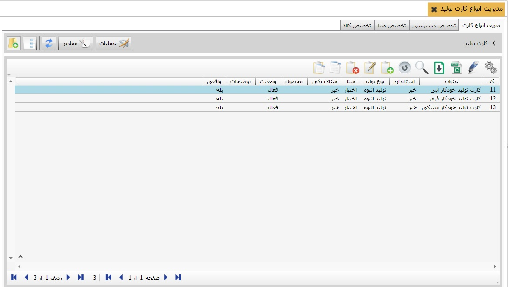
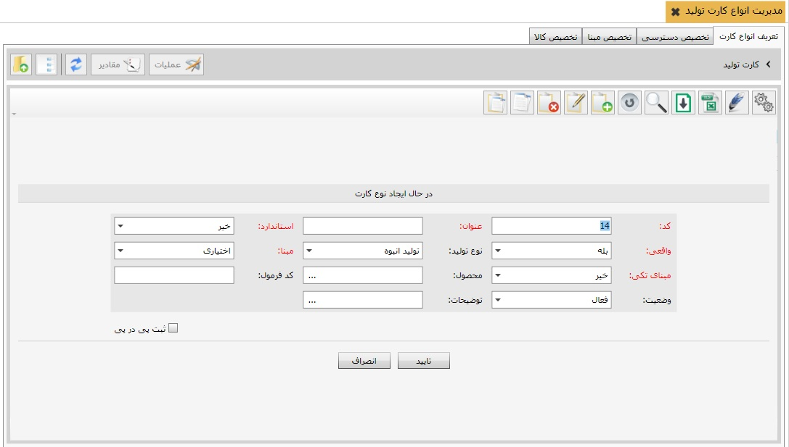

برای صدورکارت تولید استاندارد و واقعی، تعریف انواع کارت های تولید الزامی است، در این جا به نحوه تعریف کارت های تولید می پردازیم. برای ایجاد کارت تولید (واقعی یا استاندارد)، روی گزینه « مدیریت انواع کارت های تولید» از منوی « اطلاعات پایه و عملیات» کلیک کنید، پنجره ای باز می شود که شامل چهار تب « تعریف انواع کارت تولید» ،« تخصیص دسترسی» و « تخصیص مبنا» و «تخصیص کالا» می باشد.
در شکل زیر این منو را مشاهده میکنید.
با استفاده از این چهار تب به ترتیب شما می توانید کارت های تولید را ایجاد کنید و در تب بعد مشخص کنید که هر کاربر به کدام عملیات دسترسی داشته باشد و در تب سوم می توانید عملیات های سایر سیستم ها را به کارت تولید تعریف شده تخصیص دهید در تب چهارم نیز می توانید کالای مورد نظرتان را به کارت تولید مربوطه تخصیص دهید.
در این تب می توانید کارت های مورد نیاز برای تولید را تعریف کنید. برای تعریف کارت تولید از جدول موجود گزینه اضافه را انتخاب نمایید تا فرم ایجاد کارت تولید باز شود:
پس از تکمیل اطلاعات جدول فوق بر روی کلید تایید کلیک کنید تا کارت مورد نظر شما ایجاد شود.
در این تب کاربر مورد نظر خود را از سمت راست تصویر انتخاب کنید سپس کارت تولید مربوطه را به او تخصیص دهید.
در صورتی که کارت تولید شما نیاز به مبنا داشته باشد در این تب می توانید مبنای مورد نظرتان را به کارت تولید تخصیص دهید.
در این تب ابتدا از سمت راست تصویر کارت تولید را انتخاب کنید سپس از سمت چپ کالای مربوط به کارت را تخصیص دهید.